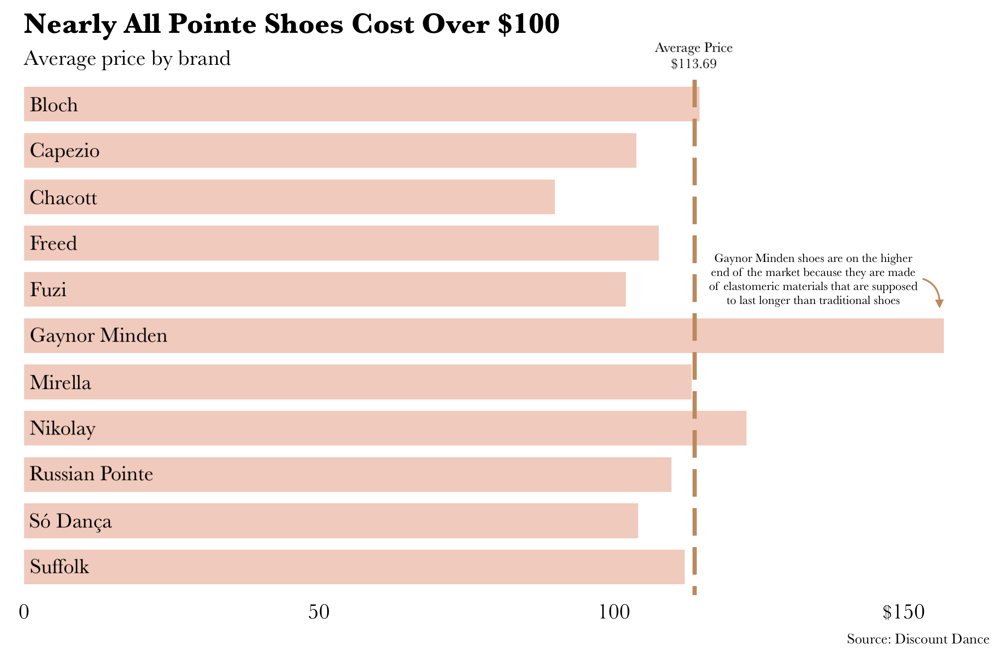
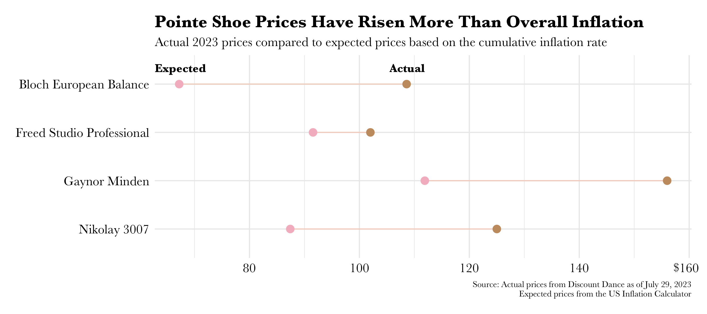

datapointe
The Bunhead's Inflation Indicator: Pointe Shoe Prices
Pointe shoes, those beautiful (and sometimes painful) satin shoes that allow ballet dancers to stand on their toes, have always been an expensive tool of the trade. I like to joke that they're my favorite inflation indicator, since prices seem to be higher every time I buy a new pair. I decided to take a closer look to see if that was actually true. When I got my first pair of pointe shoes in 2010, the cheapest pair on the market was only around $50, though I think most shoes fell in the $70 range at that time. Today, the average is nearly $114, according to an analysis of the shoes available on Discount Dance, one of the biggest online dancewear retailers.
Some background on pointe shoes: there are several major brands that make pointe shoes and each one makes several models. Each shoe is handmade, and the vast majority are made of the same materials, mostly fabric and paper hardened by glue. The labor-intensive process plays a large part in the shoes' high costs. Every model and brand varies in fit and pliability, and dancers typically have a preferred shoe.
For the past few years, mine has been the Grishko 2007 (since updated to be the Nikolay 3007). That shoe, one of the most popular models, costs $125, nearly double the 2013 price of $64.50. Another popular shoe, Bloch's Balance European, used to be one of the most affordable shoes on the market, selling for just $60.40 on Discount Dance's website in 2013. The shoe is now nearly $110.
At the higher range of the price spectrum are shoes made from man-made materials, which are built to last longer than the traditional paper, fabric and glue combination. A pair from the brand Gaynor Minden, which pioneered this type of shoe, now costs $156, up from $87 a decade ago.

The price changes from 2011 to 2023 amount to an 119% increase in prices for Bloch's Balance Europeans, 93.9% for the Grishko 2007/Nikolay 3007s, and an 89% increase for Gaynor Mindens. That's steeper than the cumulative rate of inflation in that same time period, 35.6%, according to the US Inflation Calculator.
All that is to say that I'm hoarding the stash of shoes I bought on sale last year, though luckily, as a recreational dancer, mine last several months (an eternity compared to just a day for some professional dancers). I'm more curious about the impacts of these elevated prices on the art form as a whole. Have the prices made ballet an even less accessible art form for students? Professional companies pay for all their dancers' shoes — how are they dealing with these price changes? Also, wondering about the factors driving these price increases, including what the labor market looks like for pointe shoe makers. Maybe I'll try to answer some of those questions next...
Data Notes
Data was manually collected from Discount Dance's website as of July 29, 2023, and Wayback Machine's archives of Discount Dance. Prices for each year are from different months, depending on what Wayback Machine had available. Prices on Discount Dance don't perfectly mirror the brands' own prices; as the retailer's name suggests, prices on Discount Dance are often slightly lower. The shoes shown in the chart are all among the most popular models, but were chosen subjectively and don't represent the entire pointe shoe market.